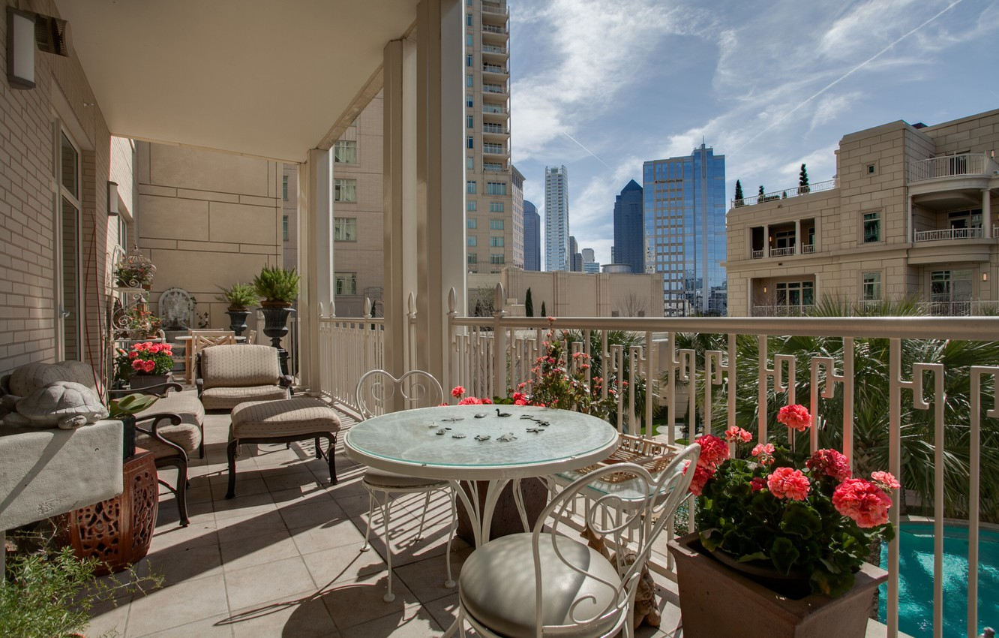

Горел рассвет, встречая утро,
Вставая солнцем из тумана облаков,
Я на балконе с чашкой кофе и остатком снов,
О боже, как же мне сейчас уютно,
О боже, как же воздух свеж,
Как звуки лёгкостью своей пленяют,
Остатки ночи в солнечном рассвете тают,
Рисуя между сутками рубеж,
Ты всё живешь, себе не изменяя,
Люблю тебя, живу тобой, дышу тобой,
За всё тебе спасибо город мой родной,
Горжусь тобой и никогда не забываю.
